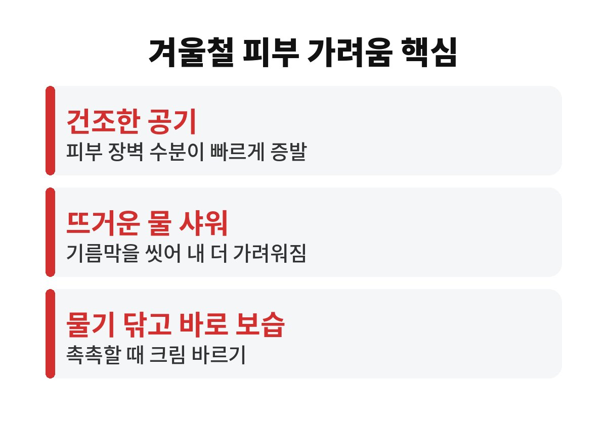
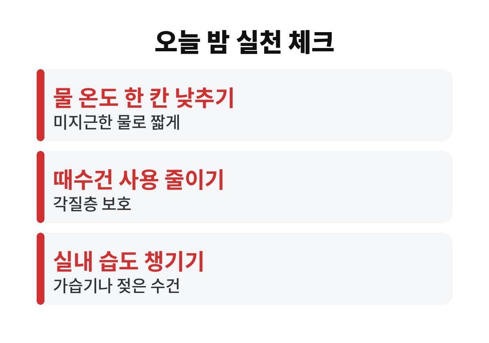

겨울철 피부 가려움의 가장 흔한 원인은 공기가 건조해지면서 피부 장벽의 수분이 빠르게 날아가는 것이다. 11월 들어 밤마다 팔다리가 근질거린다면, 뜨거운 물로 오래 샤워하는 습관이 오히려 가려움을 키우고 있을 수 있는데 그 이유가 궁금할 것이다.
가을에서 겨울로 넘어가면 공기 중 습도가 뚝 떨어진다. 피부 겉면의 각질층은 수분과 기름막으로 몸을 지키는 방패 역할을 하는데, 건조한 공기에서는 이 방패가 쉽게 갈라진다. 방패에 틈이 생기면 작은 자극에도 신경이 예민하게 반응해 가려움이 올라온다.
여기에 난방까지 더해진다. 실내가 따뜻해질수록 습도는 더 낮아지기 쉬워서, 집 안에 있어도 피부는 계속 말라 간다. 겨울철 피부 가려움이 밤에 더 심하게 느껴지는 것도 이불 속 온기와 건조한 공기가 겹치기 때문인 경우가 많다.
특히 정강이, 팔 안쪽, 옆구리처럼 피지선이 적은 부위가 먼저 가려워지는 경우가 많다. 이런 부위는 기름막이 얇아서 건조함에 가장 먼저 무너지는 곳이다. 나이가 들수록 피부가 스스로 수분을 붙잡는 힘이 약해지므로 부모님 세대는 증상이 더 눈에 띌 수 있다.
그렇다. 뜨거운 물은 피부 표면의 기름막을 씻어 내는 힘이 강하다. 씻고 나면 개운한 느낌이 들지만, 그 순간 피부는 보호막을 잃고 더 빨리 마르게 된다. 가려워서 뜨거운 물로 풀어 주면 잠깐은 시원하지만 곧바로 더 가려워지는 악순환이 생긴다.
샤워 시간도 중요하다. 오래 씻을수록 피부가 물과 비누에 노출되는 시간이 길어져 수분과 기름이 함께 빠져나간다. 겨울에는 미지근한 물로 짧게 끝내는 편이 피부에 부담이 적다. 제목에서 말한 10분은 하나의 기준일 뿐이며, 피부가 건조하다면 더 짧게 마치는 것이 좋다.
때수건으로 박박 미는 습관도 겨울에는 함정이다. 이미 갈라진 각질층을 더 벗겨 내면 피부가 따갑고 붉어질 수 있다. 비누는 땀과 냄새가 나는 부위 위주로 쓰고, 나머지는 물로 가볍게 헹구는 정도로 충분하다.
보습의 핵심은 타이밍이다. 샤워를 마치고 수건으로 물기를 톡톡 눌러 닦은 뒤, 피부가 아직 촉촉할 때 바로 보습제를 바르는 것이 좋다. 시간이 지나 피부가 완전히 마른 뒤에 바르면 수분이 이미 날아간 상태라 효과가 떨어진다.
보습제는 로션보다 크림이나 연고처럼 조금 되직한 제형이 겨울에는 도움이 되는 경우가 많다. 향이 강한 제품은 예민한 피부에 자극이 될 수 있으므로 향료가 적은 제품을 고르는 편이 안전하다. 하루 한 번보다는 건조함이 느껴질 때마다 덧바르는 것이 낫다.
| 물 온도 | 뜨겁지 않은 미지근한 물 사용하기 |
| 샤워 시간 | 길게 끌지 않고 짧게 마무리하기 |
| 보습 타이밍 | 물기를 닦은 직후 바로 크림 바르기 |

옷차림도 가려움에 영향을 준다. 양모처럼 거친 섬유가 맨살에 닿으면 건조한 피부를 계속 자극할 수 있어서, 속옷은 부드러운 면 소재를 입는 편이 편하다. 세탁 후 세제가 남지 않도록 충분히 헹구는 것도 의외로 놓치기 쉬운 부분이다.
전기장판이나 온풍기 바람을 피부에 직접 오래 쐬는 습관도 피하는 것이 좋다. 따뜻해서 기분은 좋지만 피부 수분을 더 빠르게 빼앗아 간다. 가려운 곳을 긁기 전에 차가운 수건을 잠깐 대 주면 긁고 싶은 충동을 줄이는 데 도움이 된다.
이처럼 겨울철 피부 가려움은 약보다 생활 습관에서 먼저 길이 보이는 경우가 많다. 오늘부터 하나씩만 바꿔 봐도 밤에 훨씬 편하게 잠들 수 있을 것이다.
보습과 샤워 습관을 바꿔도 가려움이 계속되거나 피부가 붉게 부풀고 진물이 나면 단순 건조증이 아닐 수 있다. 습진이나 알레르기, 다른 피부 질환이 숨어 있을 가능성도 있기 때문이다. 밤에 잠을 설칠 정도로 가렵다면 참지 말고 피부과 진료를 받는 것이 좋다.
또 피부에 눈에 띄는 변화가 없는데도 온몸이 오래 가렵다면 다른 원인이 있는지 확인해 볼 필요가 있다. 이런 경우는 스스로 판단하기 어려우므로 의료진과 상담하는 것이 가장 안전하다. 긁어서 생긴 상처는 감염으로 이어질 수 있으니 손톱을 짧게 관리하는 것도 도움이 된다.
마지막으로 실내 습도를 적당히 유지하고 물을 자주 마시는 것도 기본이다. 가습기나 젖은 수건 한 장만으로도 방 안 건조함이 한결 줄어든다. 오늘 밤 샤워 물 온도부터 한 칸 낮춰 보면 어떨까.

도움이 되셨다면 구독과 공감 부탁드린다.
※ 이 글은 일반적인 건강 정보이며 진단이나 치료를 대신하지 않는다. 증상이 지속되면 반드시 전문의와 상담하기를 권장한다.